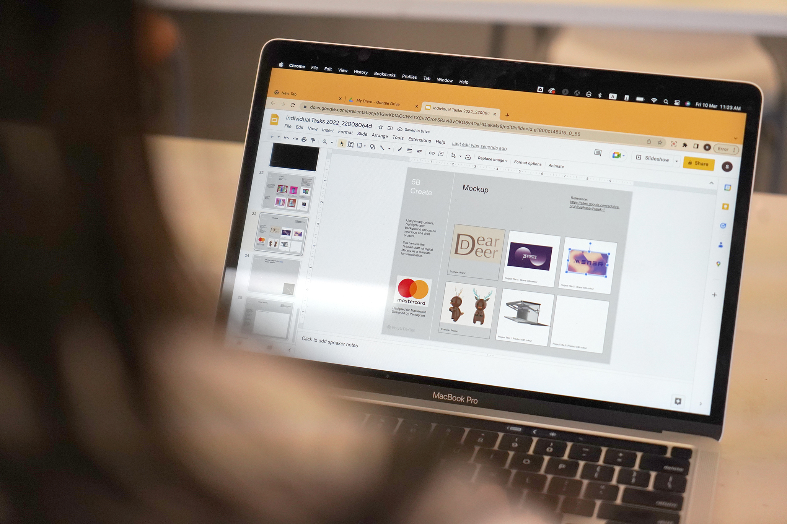

2023
Enquiry-based learning in visual communication
The School of Design (SD) will be launching a new curriculum in the next cohort as one of its aims is to increase interdisciplinary capacity in design-led innovation and it is vital that students gain knowledge in communication in order to be prepared to engage with different complex problems. SD1103 Communication Basics for Designers used to be a subject that serve for the needs of students to communicate concept graphicly and visually, in which some essential design application such as Adobe suite will be introduce during the class. However, after many years of teaching, our project team has realised that students acquire applied skills based on the needs of their projects and they can easily find answers from the internet, this keeps students not engaging in learning in the classroom. Therefore, if we teach these skills in advance and in a linear sequence, this is not effective and it wastes class time.

Enquiry-based learning in visual communication
The School of Design (SD) will be launching a new curriculum in the next cohort as one of its aims is to increase interdisciplinary capacity in design-led innovation and it is vital that students gain knowledge in communication in order to be prepared to engage with different complex problems. SD1103 Communication Basics for Designers used to be a subject that serve for the needs of students to communicate concept graphicly and visually, in which some essential design application such as Adobe suite will be introduce during the class. However, after many years of teaching, our project team has realised that students acquire applied skills based on the needs of their projects and they can easily find answers from the internet, this keeps students not engaging in learning in the classroom. Therefore, if we teach these skills in advance and in a linear sequence, this is not effective and it wastes class time.

2022
Archival researchFestival of Hong KongEnquiry-based learning in visual communication
The late-1960s in Hong Kong is also regarded as ‘an intense era’ because of the great disturbance brought to the society by a series of riots. In response to this, the British colonial government launched the Festival of Hong Kong in subsequent years. Some commentators believed besides being a recreational activity, the festival was also the government's attempts at alleviating distress and fostering a sense of identity among Hong Kong people. Nevertheless, the festival was the first and the largest official entertainment event in Hong Kong history, which utilised different design elements and media to establish the distinct visual identity. The festival’s logo was a rubber ball with alternating and white stripes—a clever motif as its elasticity symbolised the resilience and extraordinary adaptability of Hong Kong people. This is the second exhibition in our ‘Designing the Spectacle’ series. Setting our anchor in Hong Kong, we will explore the intricate relationship between designs for Festival of Hong Kong and the society. Moreover, it is not the exhibition’s purpose to romanticise the good old days of Hong Kong, nor is it aiming to reconstruct the merry scenes of the festival. Instead, we focus on investigating the role of design, its application, function and influence in a turbulent society. It is hoped that this exhibition will inspire us to reflect on the limitless roles design can still play even during disturbances in our society today. On the occasion that this year is the 50th anniversary of the Festival of Hong Kong, let us look back on the ‘rubber ball’—an exemplar of our optimism and elasticity—to cheer on ourselves with some positive mindsets during this difficult time in our society.
Archival researchFestival of Hong KongEnquiry-based learning in visual communication
The late-1960s in Hong Kong is also regarded as ‘an intense era’ because of the great disturbance brought to the society by a series of riots. In response to this, the British colonial government launched the Festival of Hong Kong in subsequent years. Some commentators believed besides being a recreational activity, the festival was also the government's attempts at alleviating distress and fostering a sense of identity among Hong Kong people. Nevertheless, the festival was the first and the largest official entertainment event in Hong Kong history, which utilised different design elements and media to establish the distinct visual identity. The festival’s logo was a rubber ball with alternating and white stripes—a clever motif as its elasticity symbolised the resilience and extraordinary adaptability of Hong Kong people. This is the second exhibition in our ‘Designing the Spectacle’ series. Setting our anchor in Hong Kong, we will explore the intricate relationship between designs for Festival of Hong Kong and the society. Moreover, it is not the exhibition’s purpose to romanticise the good old days of Hong Kong, nor is it aiming to reconstruct the merry scenes of the festival. Instead, we focus on investigating the role of design, its application, function and influence in a turbulent society. It is hoped that this exhibition will inspire us to reflect on the limitless roles design can still play even during disturbances in our society today. On the occasion that this year is the 50th anniversary of the Festival of Hong Kong, let us look back on the ‘rubber ball’—an exemplar of our optimism and elasticity—to cheer on ourselves with some positive mindsets during this difficult time in our society.